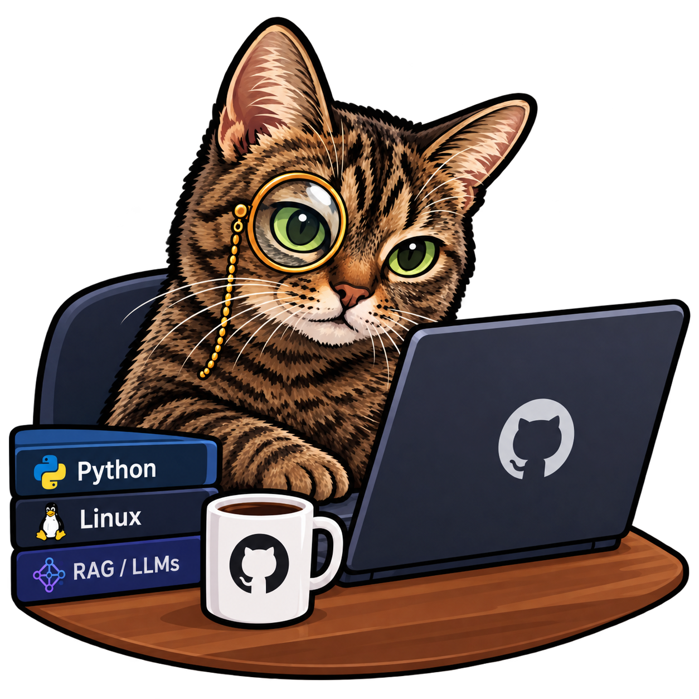
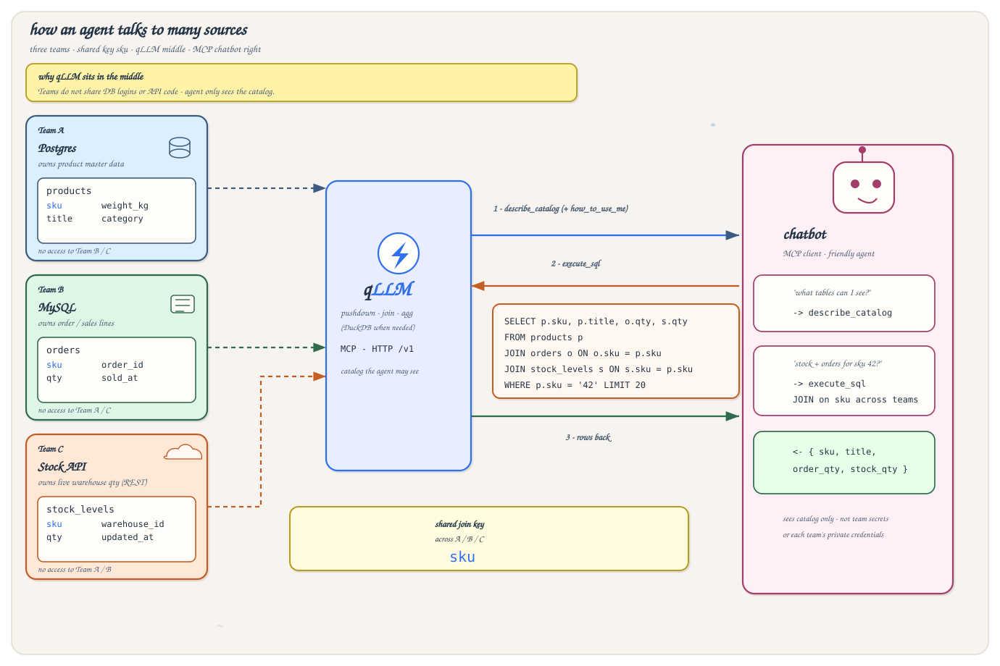

Protocol 0.2.0 · Release 0.3.4
qLLM
Help LLMs ask real questions across the databases, APIs, and streams you already run — one catalog, governed reads, not a warehouse.
Experimental project. Provided as-is. The author accepts no responsibility for any damage caused by its use.

One catalog. Many sources. Built for LLM conversations with data.
An LLM is far more useful when it can ask your data — inventory next to pricing,
tickets next to accounts, metrics next to a REST profile — without you wiring a custom
tool per table. qLLM is that layer: you describe sources in a YAML preset, and only the
entities and fields you want in a logical catalog. The agent sees the catalog — nothing
else — then talks through HTTP /v1 or MCP with Query IR or catalog SQL.
Organizations keep data in many places and expose only a few views or endpoints on
purpose. Read-only by default, with required row limits and a fail-fast budget. When the
answer lives across systems — for example products in Postgres and stock levels in an
HTTP API linked by sku — the model still writes one query. qLLM pushes
filters and limits to each source, then joins, aggregates, and shapes the result locally
(DuckDB) so the agent gets a single table back: totals by warehouse, top SKUs, filtered
joins — not three round-trips you have to glue in the prompt.
Example
From three team silos to one chatbot answer
Team A (Postgres products), Team B (MySQL orders), and Team C (Stock API) each own
one table keyed by sku — and they do not share DB logins or API
code. qLLM is the bridge; the bot asks MCP for the catalog, sends a JOIN, gets rows
back.

Use it when
- Agents Chat, copilots, or MCP clients need governed answers from more than one system.
- Cross-source Keys line up across DB + API (or DB + DB): one SQL/IR query, join and aggregate in the runtime.
- Governance You want the model to see a catalog you chose — not raw credentials or every column in production.
What it is not
- Warehouse No ETL lake. Fail-fast budget (~15000 ms / 15 s). Slow sources are out of scope.
- Raw SQL Agents do not get source dialects or free-form credentials.
- Per-table tools Three MCP tools cover the surface; the catalog is the map, not a swarm of endpoints.
Preset → catalog → IR/SQL → pushdown → DuckDB
You write which sources exist and which logical tables the agent may see. The runtime validates, serves, and plans. Same-source work pushes down where the connector allows; cross-source joins, aggregations, and shaping finish in a small local DuckDB step — so the LLM keeps asking in catalog SQL / Query IR, not in three vendor dialects.
preset.yaml + catalog.yaml ↓ validate → HTTP /v1 or MCP ↓ Query IR or catalog SQL ↓ pushdown per source → optional DuckDB join
Three MCP tools. A small HTTP surface.
MVP tools: how_to_use_me, describe_catalog,
execute_sql. No per-table tools. HTTP exposes
/v1/howtouseme, /v1/catalog, /v1/queries,
/v1/sql, and /v1/health.
Stable harness connectors: postgres, mysql, mongodb, rest. Experimental types (mssql, sqlite, clickhouse, dynamodb, cassandra, ksql, redis, kafka, graphql, and wire aliases) ship in the binary without Compose goldens — see Connectors.
Prefer the Release zip
Download qllm-standalone-<ver>.zip — not “Source code”. Clone only for
development or the harness.
Need every field and flag?
Product pages stay short. The implementer manuals cover field reference, CLI, HTTP/MCP, and errors in depth.
Want to contribute?
Fork, open a focused PR, follow the contract checklist and Code of Conduct.